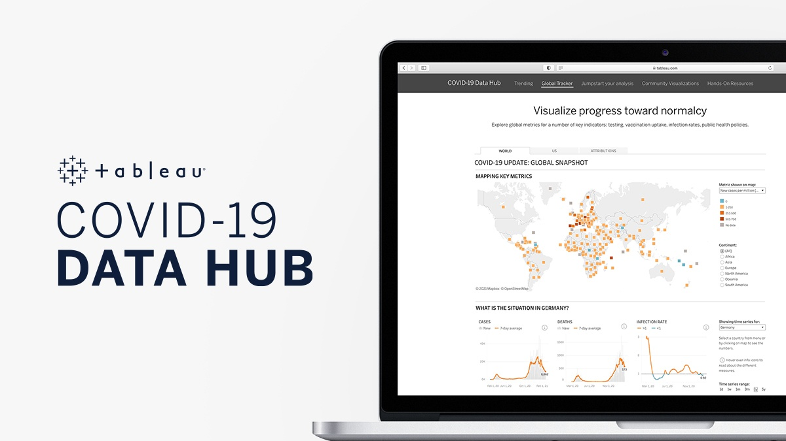
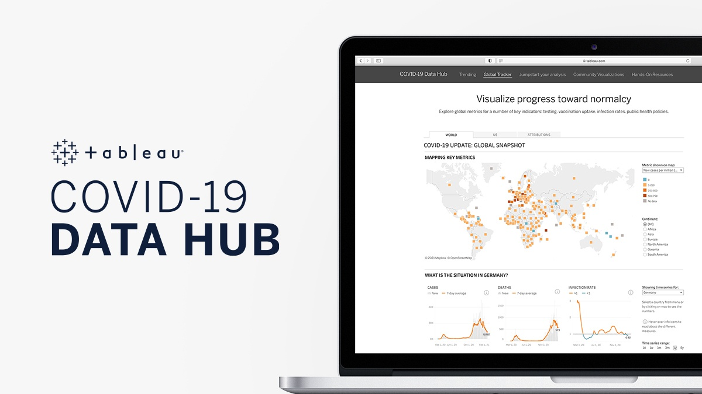

Data Exploration of Covid 19 Dataset in SQL identifying the effect of Covid 19 and Vaccines on the global population using statements, such as Select, From, Order by, Group by, Where, Like, Sum, Null, Insert and Joins..
 

Tableau Data Visualizations of Quantified COVID-19 Global fatalities and infection rates over time, by continent, and by country.

In an effort to aid potential AirBnb investors in Seattle, WA, this visualization identifies properties with the highest earning potential by displaying zip codes with the lowest/highest daily rates,
quantifying revenue by the amount of bedrooms and calculating average revenue by time of year.
Data Cleaning of Global Bike Sales statistics to create a Dashboard using Pivot Tables. This permits bike retailers to identify the demographics that represent the majority of their revenue and the demographics to target for future sales.

Cleaning of Nashville, TN Housing Data in SQL Server to create a manageable table for future queries using statements, such as Update, Set, Alter Table, Inner Joins, Substrings, Parsename, Select Distinct, Delete, Case and Partitions.
Pokemon SQL project showcasing statements, such as Average, Max, Min, Group by, Having, Where and Case, to identify the strongest Pokemons.

Actors SQL project using Self Joins and combining multiple Joins to demonstrate different types of connections between actors.

Uber Eats SQL project aimed at creating and maintaining a data table that utilizes the following functions:
Create a table, Insert Values, Updating and Deleting data.